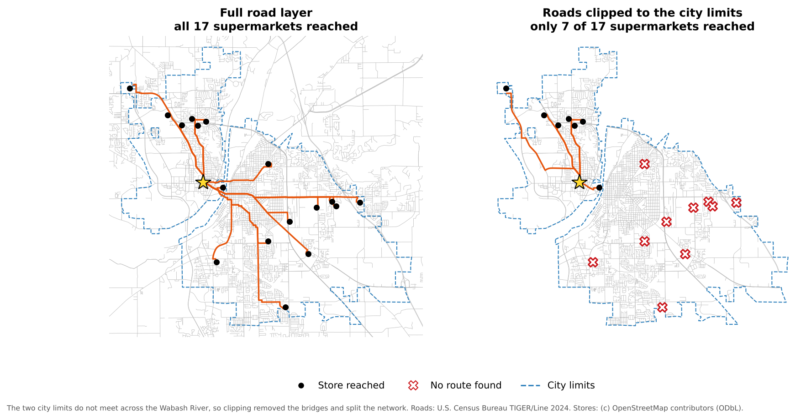
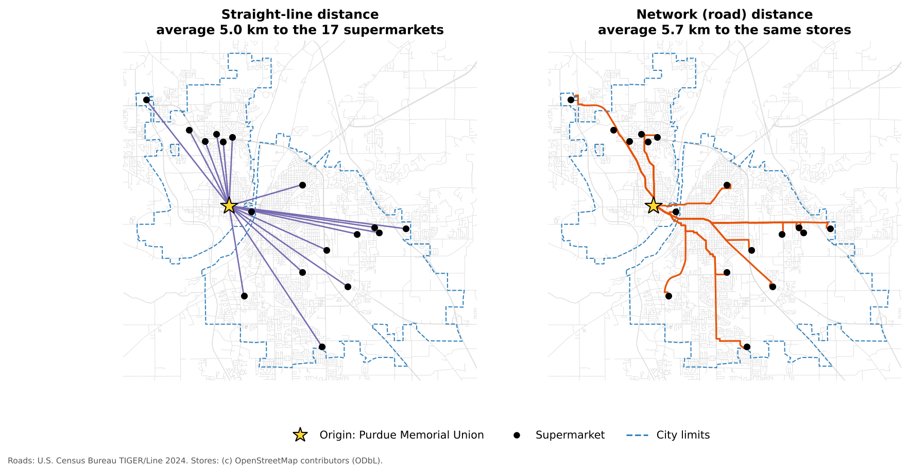
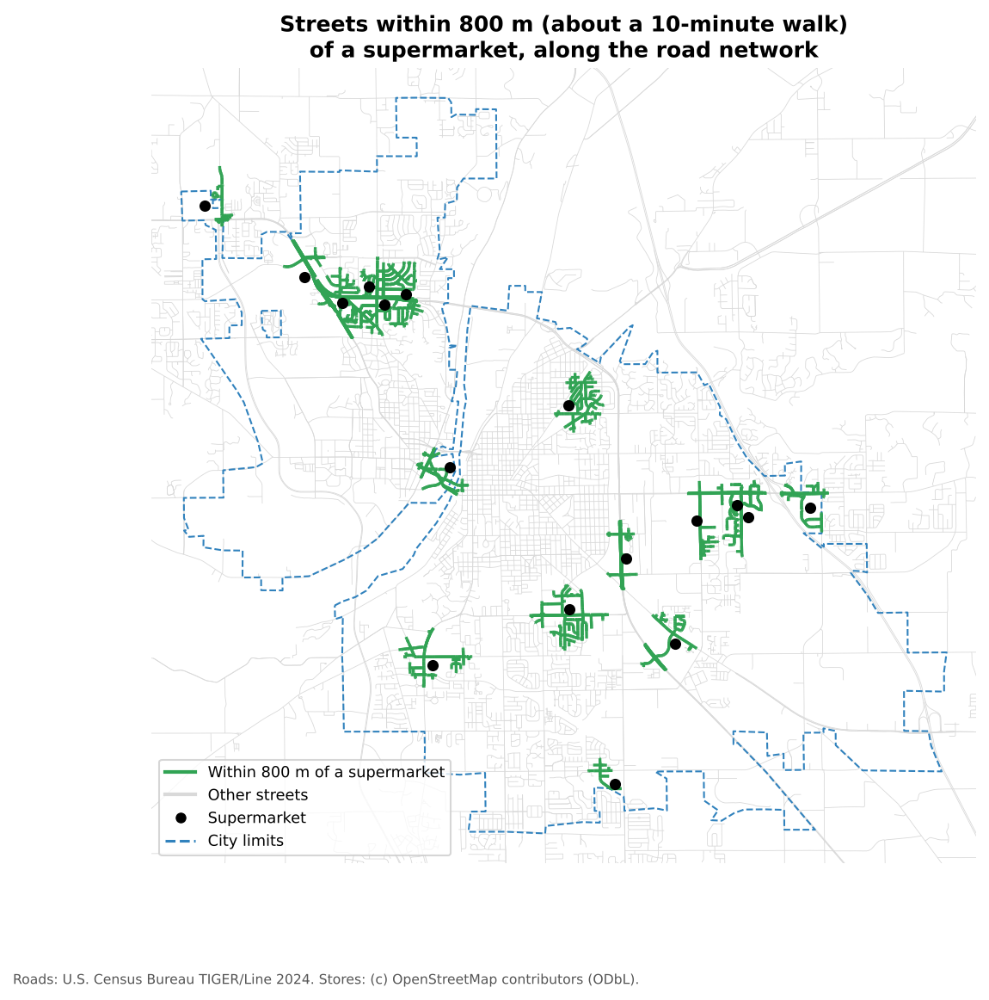

Network Analysis for Grocery Access in QGIS
Last updated on 2026-10-17 | Edit this page
Estimated time: 75 minutes
Overview
Questions
- How do we move from grocery store points to an analysis of travel along roads?
- How do shortest path and service area tools in QGIS answer different questions about access?
- Why is network distance often better than straight-line distance for access studies?
Objectives
- Load grocery store, road and study area layers into QGIS from the web
- Reproject layers to a projected coordinate system so that distances are in meters
- Calculate shortest paths from one origin to every supermarket
- Generate service areas that show which streets are within walking distance of a supermarket
- Recognize data problems that break network analysis
Overview
In the previous episode, a team mapped grocery stores in the field with QField. In this episode, we use grocery store points with a road network to ask a new question:
How accessible are grocery stores when movement is limited to the road network?
This episode moves from data collection to analysis. Instead of treating distance as a straight line, we measure routes along streets.
Imagine that a class, a community partner or a student group wants to know how easy it is to reach a supermarket from a residence hall, an apartment complex or a neighborhood. We will:
- prepare the grocery store and road data
- calculate routes from one starting point to every supermarket
- create service areas showing the streets within a chosen distance of a supermarket
The data
Three small files are stored in this lesson’s repository. You do not need to download them; QGIS reads them straight from the web.
| Layer | Contents | Source |
|---|---|---|
grocery_stores |
64 food stores in and around Lafayette and West Lafayette: 17 supermarkets, 2 wholesale stores and 45 convenience stores | OpenStreetMap contributors (Open Database License), October 2026 |
roads |
3,466 road segments covering both cities and a margin around them | U.S. Census Bureau, TIGER/Line 2024 |
study_area |
The city limits of Lafayette and West Lafayette | U.S. Census Bureau, 2024 cartographic boundary files |
The store points stand in for data collected with QField. In a real project, the team would have verified them in the field first.
Before you begin
- QGIS installed (see Setup)
- Basic familiarity with the QGIS interface, for example from the Data Visualization module’s “Getting Started with QGIS” episode
Step 1: Load and inspect the layers
Open QGIS and start a new project.
Go to Layer > Add Layer > Add Vector Layer.
For Source Type, choose Protocol: HTTP(S), cloud, etc. and leave Type as HTTP/HTTPS/FTP.
-
Paste the first address into URI, click Add, and repeat for the other two:
https://raw.githubusercontent.com/SpatialTurn/DataCollection/main/data/grocery_stores.geojson https://raw.githubusercontent.com/SpatialTurn/DataCollection/main/data/roads.geojson https://raw.githubusercontent.com/SpatialTurn/DataCollection/main/data/study_area.geojson Click Close. In the Layers panel, drag
grocery_storesto the top so the points draw above the roads.Right-click
grocery_storesand choose Open Attribute Table. Look at the fields:store_name,store_type,address,city,osm_id,sourceandverification.
Before analyzing anything, look for problems:
- duplicate points
- stores outside the study area
- stores with no name or address
- roads that look disconnected from the rest
Quick inspection
Look at the map and the attribute table. What do you notice? Which kinds of data problems would most directly affect a network analysis?
You may notice that six convenience stores, such as a Love’s travel stop, lie just outside the city limits. Stores like these should usually stay in an analysis, because city residents shop there too. (All 17 supermarkets are inside the city limits.) A few convenience stores have no name, and several stores have no address. Two Fresh Thyme points might look like duplicates, but they are two different stores, one in each city; check before deleting anything.
The problems that most directly affect a network analysis are those that affect where a route starts or ends:
- a store point placed far from any road
- duplicate stores, which inflate the number of destinations
- disconnected road segments, which break routes
- layers in different coordinate systems, which appear in the wrong place
Step 2: Keep only the supermarkets
Convenience stores rarely sell a full range of fresh food, so food access studies usually focus on supermarkets.
- Open the Processing Toolbox (Processing > Toolbox).
- Search for Extract by attribute and open it.
- Set Input layer to
grocery_stores, Selection attribute tostore_type, Operator to=, and Value toSupermarket. - Click Run. A new layer called Extracted
(attribute) appears with 17 supermarkets. Rename it
supermarkets(right-click > Rename Layer).
Step 3: Reproject the data
Network analysis should be done in a projected coordinate system, so that distances are measured in meters rather than degrees. The files are stored in latitude and longitude (EPSG:4326). For Lafayette, a good choice is NAD83 / UTM zone 16N (EPSG:26916).
- In the Processing Toolbox, search for Reproject layer and open it.
- Set Input layer to
supermarketsand Target CRS to EPSG:26916. - Click Run, and rename the output
supermarkets_utm. - Repeat for
roads(rename the outputroads_utm) andstudy_area(study_area_utm). - Set the project coordinate system too: click the CRS button in the bottom-right corner of the QGIS window (it shows something like EPSG:4326), search for 26916, select NAD83 / UTM zone 16N, and click OK.
Why set the project CRS as well?
QGIS’s network tools report travel cost in the units of the project’s coordinate system. If the project is still in EPSG:4326, a 4 km route is reported as a cost of about 0.036 (degrees). With the project in EPSG:26916, the same route has a cost of about 4,000 (meters).
Do not assume that layers are ready for analysis just because they draw in the same place. Check the CRS of each layer (right-click > Properties > Information).
Step 4: Do not clip the roads too tightly
It is tempting to clip the road layer to the city limits to make it smaller. Here, that is a mistake. The road file already stops a short distance outside the two cities, and the city limits are irregular: they do not even meet each other across the Wabash River. Clipping the roads to them removes the bridges and splits the network into pieces.

With the full road layer, all 17 supermarkets can be reached. With roads clipped to the city limits, only 7 can. When you do clip a network, clip it to a generous rectangle or buffer around your study area, never to an irregular boundary.
Step 5: Choose a starting point
Our origin is the Purdue Memorial Union, in the center of campus. You will set it inside the shortest path tool in the next step, either by clicking on the map or by typing its coordinates:
507575, 4474900 [EPSG:26916]Why start with one origin?
Why might it be better to start with a single origin before moving on to many homes or neighborhoods?
A single origin keeps the first analysis easy to read. You can inspect the routes, compare stores and find problems with snapping or connectivity before moving to a more complex workflow with many origins.
Step 6: Shortest paths to every supermarket
- In the Processing Toolbox, search for Shortest path (point to layer) and open it.
- Set the parameters:
-
Vector layer representing network:
roads_utm - Path type to calculate: Shortest
- Start point (x, y): click the … button, then click the Purdue Memorial Union on the map, or paste the coordinates from Step 5
-
Vector layer with end points:
supermarkets_utm - Shortest path: leave as a temporary layer
- Non-routable features: leave as a temporary layer
-
Vector layer representing network:
- Click Run.
You now have a line layer, Shortest path, with one
route from the origin to each supermarket. Its cost field
is the route length in meters.
When a store cannot be reached
If a store cannot be reached through the network, its route has an empty (NULL) cost. Stores that cannot be connected to the network at all are listed in the Non-routable features layer. Both usually point to a data problem: a store far from any road, a gap in the network, or a network clipped too tightly.
Step 7: Compare network and straight-line distance
- Style the Shortest path layer with a bold, bright line, the supermarkets with a distinct point symbol, and the roads in light gray.
- Open the attribute table of Shortest path and click the Field Calculator button (the abacus icon).
- Create a new field
route_km(Decimal number) with the expression"cost" / 1000. - Create another field
straight_kmwith the expressiondistance(start_point($geometry), end_point($geometry)) / 1000. This is the straight-line distance between the two ends of the route. - Create a third field
detourwith the expression"route_km" / "straight_km". - Close the Field Calculator, turn off editing (save the edits), and
sort the table by
route_km.

The nearest supermarket by road is about 1.3 km away. On average, routes are about 14% longer than straight lines, and some are much longer: the Walmart Supercenter on Veterans Memorial Parkway is 8.0 km away in a straight line but about 10.1 km by road, a detour of about 1.3. The river, the few bridges, railroads and cul-de-sacs all force detours.
Interpreting route results
A store looks close on the map, but its route is much longer than expected. Name two possible reasons.
- The street network requires a detour, for example because there is no bridge or direct road
- The store or the origin snapped to a different road segment than you expected
- Barriers such as rivers, railroads, highways with few crossings, or cul-de-sacs
- The store point is slightly off its true entrance, for example in the middle of a large parking lot
Step 8: Service areas around supermarkets
Shortest paths answer the question: how do I get from one place to each store?
Service areas answer a different question: which streets are within a given distance of a store?
- In the Processing Toolbox, search for Service area (from layer) and open it.
- Set the parameters:
-
Vector layer representing network:
roads_utm -
Vector layer with start points:
supermarkets_utm - Path type to calculate: Shortest
-
Travel cost:
800(meters, about a 10-minute walk)
-
Vector layer representing network:
- Click Run.
The output, Service area (lines), shows the parts of the street network you can reach within 800 m of a supermarket.

Only about 11% of the street length inside the two cities is within an 800 m walk of a supermarket. Most supermarkets sit on commercial corridors at the edges of the cities, designed for people who drive.
Step 9: Interpret the results
Service areas support questions such as:
- Which parts of the study area appear well served by the current supermarkets?
- Which neighborhoods appear poorly connected?
- How does the answer change with a travel cost of 400 m, 800 m or 1,600 m?
Combine this with the census map from the Census episode. Of the six census tracts with the highest share of households without a car, four (tracts 4, 7, 105 and 112, in central Lafayette and around the Purdue campus) have almost no streets within 800 m of a supermarket. That is exactly where a food access problem would be expected.
Remember that the result is only as good as the network and the assumptions behind it:
- A road centerline layer does not show sidewalks, crosswalks or footpaths
- Highways appear walkable in the network, but are not
- Verified store points improve the destinations, but cannot fix a poor road layer
Reflection
What parts of real-world access are still missing from this analysis, even after using a network instead of straight-line distance?
Possible answers include sidewalk quality, crosswalks, traffic safety, bus routes, store hours, prices, food quality, disability access, and whether a road is really walkable.
Change the distance
Run Service area (from layer) again with a travel
cost of 1600 (about a 20-minute walk). How does the picture
change?
The share of city streets within reach rises from about 11% to about 40%, and the green areas begin to join along the main corridors. But some areas are still left out: tract 105, beside the Purdue campus, where more than 40% of households have no car, has no streets within 1,600 m of a supermarket along the network. Walking 20 minutes each way with groceries is a real burden, which is why access studies also consider car ownership and public transit.
Step 10: Save your outputs
Temporary layers disappear when QGIS closes. To keep them,
right-click each one and choose Export > Save Features
As…, and save it to a GeoPackage (for example
grocery_access.gpkg) with a different Layer
name for each:
supermarkets_utmroads_utmshortest_pathsservice_area_800m
Then save the project (Project > Save). These outputs can be reused to join service areas to census data, to design a map layout, or to compare neighborhoods.
Suggested pacing: loading and inspection 10 minutes; extracting and reprojecting 15; shortest paths 15; comparing distances 10; service areas 15; discussion and challenges 15.
Teaching strategy: keep the lesson focused on one idea: network distance differs from straight-line distance. Connect it to the census episode’s map of households without a car.
Common learner problems:
- the project CRS is left in EPSG:4326, so costs appear in degrees
- layers are not reprojected consistently
- the road network is clipped too tightly (show the clipping figure)
- learners confuse service areas with buffers (a buffer ignores roads)
- outputs are left as temporary layers and lost
Extensions: compare shortest and fastest paths; build a layer of several origins (residence halls or apartment complexes); convert service area lines to polygons with the Concave hull tool; join service areas to census tracts.
- Grocery store points become far more useful for access questions when combined with a road network
- Reproject layers and set the project CRS to a projected system so that costs are in meters
- Shortest path tools compare routes; service area tools show which streets are within reach
- Network distance is longer than straight-line distance, sometimes by much more than expected
- Clipping a network to an irregular boundary can break routes; check for unreachable destinations